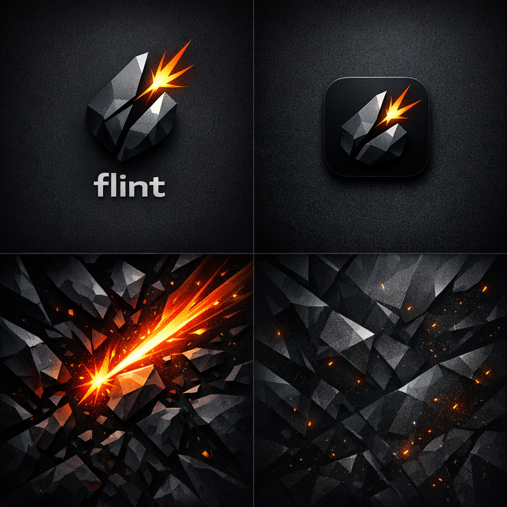

Technical leverage
Making technical investments count.
A personal home on the web
Code, teams, experiments, and the occasional good idea. I’m Luke: an engineering leader who never stopped being a developer.
Take a look aroundMy writing on Substack
Stories of human-centric engineering management. I write about the people behind the software: how we grow, lead, and build together.
Making technical investments count.
Thoughts on personal growth and helping other people develop.

A native markdown notebook for iOS. Notes live in vault folders you choose, in the Files providers you already use.
Explore the projectReading wireless thermometer data over Bluetooth and publishing it to MQTT. Software meeting the physical world.
Explore the projectAn interpreter for the Monkey programming language, built in Go while following Thorsten Ball’s Writing an Interpreter in Go. From lexer and parser to evaluator and REPL.
Explore the projectA Xero story about questioning the process between a commit and a customer.
Explore the workDevOps, Accelerate metrics, and sustaining velocity and quality.
Explore the workWhat migrations are, and how they help teams sustain velocity and quality as software evolves.
View the slidesExplore the talk repositoryI’m curious about how things work. I value autonomy, constructive feedback, and teams that have the context to make good decisions.
Outside software, there’s family, running, coffee, and tinkering with things around the house.
My manager README